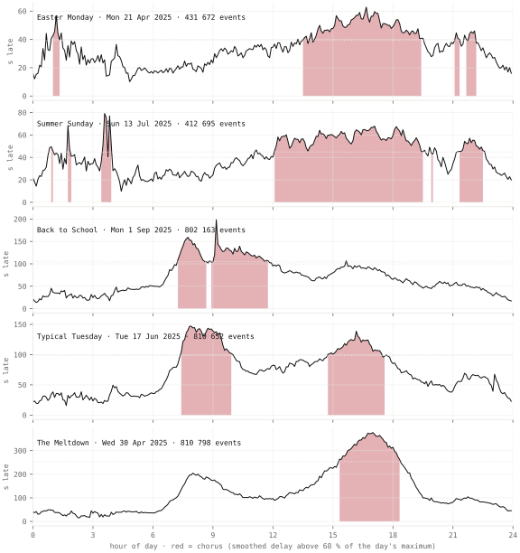

Note · 14 September 2026 · Prague public transport in 2025, as sound
What does a late day in Prague sound like?
A browser player turns five days of Prague's buses and trams in 2025 into techno, and the music gets busier the further a moment runs from an ordinary day.
- stop events on the record
- 3 267 980 five days of 2025, all modes · administrative count
- mean surface delay by day
- 36–164 s bus, tram, trolleybus · event-weighted mean of administrative records
- one day
- 288 beats 5-minute windows · 116 BPM · 24 h ≈ 2.5 min · fixed by design
- thesis source
- 121 197 794 stop passes, 15 March – 8 September 2025 · Golemio · one vehicle's segment from one stop to the next, as on the thesis page, checked in the data on 8 October 2026
Overwhelmed? Here's the short version
- The default engine compares every five-minute window with the median day of the same type, so the Meltdown plays 880 of its 1 440 minutes in the extreme state and Easter Monday 1 140 minutes sparse. The chorus is a separate rule, the worst quarter of the daytime windows, so every day has one: both rush hours on the typical Tuesday, the afternoon on the Meltdown and the holidays.
- The engine notes state that its cut-offs were fixed in robust standard deviations or round shares before the days were rendered; the night-window rule was added after a review, and the chorus rule was prompted by listening to the first v2 renders, and the notes say its values were fixed before it was rendered. Other cut-offs would put the same days in other states: the track is an interpretation of the data, not a measurement.
- Its noise is seeded, so a day at the same settings always gives the same track; the first, disco version, still selectable, draws only its hat noise and reverb tail from random numbers. No audio is sampled.
- The five dates are hard-coded in the extraction script; the computation that ranked them is not published. The piece makes no statistical claim.
- Early arrivals count as negative delay in every mean, so they can move a day into a brighter key or a sparser arrangement.
Photo: Petr Novák, Wikipedia · CC BY-SA 3.0, toned

Picture a Prague tram stop on a bad afternoon, the board slipping past the time your tram was due. Now imagine that wait as techno, busier and darker the further the city runs from an ordinary day.
The record was made alongside a master's thesis on delay persistence in the Prague network, built on the Golemio history of Prague Integrated Transport from 15 March to 8 September 2025, 121 197 794 records1. The record cuts five days into 5-minute windows per mode, each with an event count, a mean arrival delay and an unused 90th percentile. Delays outside −600 to 3 600 s are left out, and early arrivals count as negative delay in every mean. Only these aggregates are published2.
The extraction script picks the five days by rule. The typical day is the weekday nearest the median in both event count and mean delay (17 June). Then come the highest and lowest daily mean delay (30 April, 21 April), the first school day (1 September) and the quietest Sunday of the holiday season (13 July). The dates are hard-coded, and neither the ranking nor its mean is in the repository. The script labels 30 April "avg 158 s", which matches the all-mode mean, not this page's surface mean of 164 s. So whether the extremes hold by the surface mean cannot be checked. Why 30 April ran so late was not investigated2.
The mood: each window against a normal day
At the default scale a bar of four beats covers twenty minutes of data. The default engine, v2, asks how far each window sits from a normal day. It compares the event-weighted mean surface delay (bus, tram, trolleybus) with the median of the same window over all days of the same type (weekdays, Saturdays, or Sundays and holidays, the day itself included). The gap is a z score in robust standard deviations, the median absolute deviation times 1.4826 and at least 5 s, a spread that outliers barely move. A window with fewer than 1 000 surface stop events, in practice the night, counts as a normal day, since its z is then mostly sampling noise. The z is averaged over three windows. Each state is set once per bar, with half a standard deviation of hysteresis, a margin against flicker2.
That z score sets the arrangement. Below 0 the track is sparse, only kick, bass and pad. From 0 the hats, claps, stabs, plucks and lead join in. From 1 it is lifted with an arpeggio and a second lead voice, and from 2 it is extreme. The extreme state opens with a two-bar breakdown, except inside a chorus or pre-chorus, where the build replaces it. Nights have no beat in any state, because the kick and bass follow the metro. The groove follows the share of surface stop events more than 90 s late. Under 10 % the sixteenths run straight, from 10 % they swing, and from 25 % the beat drops to half-time. The round shares stand for occasional and frequent lateness.
Harmony and timbre climb a ladder on the same z, at most one rung a bar. The tonic plays below 0.5, the subdominant from 0.5, the dominant from 1, the dominant with added tensions from 2 and secondary dominants from 3, with a cadence on the way back down. Each rung opens the low-pass from 1.4 to 8 kHz and adds saturation. The echo's feedback is 0.55 times the squared persistence, how much delay carries from one stop to the next, measured per hour over all 173 days for trams (the plucks and stabs) and for all surface modes (the lead), so it runs from 0.25 to 0.51 by time of day alone. The melody rises one scale step above D4 for every 30 s of smoothed surface delay, up to ten steps. It moves within the chord-scale by at most four steps and lands on chord tones on the downbeat. Four-bar phrases end on the root or fifth, eight-bar phrases on the root. The engine notes state that the cut-offs, in robust standard deviations or round shares, were fixed before the five days were rendered, but the repository cannot confirm the order2.
Song structure
The mood says how dense and dark the track is, but in the first v2 renders it rarely said when to lift. A typical day barely left the full state and a calm one never did. On listening, the author missed a chorus and added a second layer. A bar is chorus when the smoothed surface delay at its downbeat, the same five-window curve the first version uses, reaches the day's 75th percentile. That percentile is counted over windows with at least 1 000 surface stop events, so the night cannot be chorus. Verse gaps under two bars between chorus bars are filled, and chorus runs under two bars dropped. The engine notes state that the quartile, a round share, was fixed before the rule was first rendered and not tuned by listening. Again the repository cannot confirm the order. Before short runs are dropped, the rule puts about a quarter of the counted windows into chorus. So the day's delays set where the chorus falls, and the rule sets how much of it there is. It replaces the first version's 68 % of the day's peak, which hangs on a single maximum2.
The two bars before a chorus, the pre-chorus, put a riser over a snare roll in eighths, then sixteenths. The last beat is left to snare, pad and lead as the harmony moves to the chorus's dominant, a half cadence. The first chorus bar is the drop, a crash and a sub falling from 70 to 32 Hz under kick, bass, pad, hook and counter-line only. The upper groove returns a bar later. The chorus sings one fixed four-bar hook in the day's mode, each degree bent to the chord of the bar, 1-3-5 | 4-3-2 | 3-4-5 | 4-3-2-1 from D5. Bars 1–3 start on a 3 + 3 pattern and bar 4 completes the 3 + 3 + 2, every note starting in the first half of the bar. The data melody carries on an octave lower on the second voice as a counter-line. Under it the chords run tonic, dominant, relative and subdominant, one a bar from the drop, I–V–vi–IV in the major modes (I–V–vi–II in lydian) and i–V–III–iv in the minor ones (a major IV in dorian)2.
In the chorus the arrangement plays one density state above the mood, so a sparse stretch becomes full and an extreme one stays extreme. The harmonic rung picks the chord in the dominant slot. Up to rung 1 it is the mode's own seventh chord on the fifth degree (A7 in phrygian), at rung 2 A7, at rung 3 A7 with added tensions. At rung 4 a secondary dominant, E7, precedes it. So Easter Monday's chorus is light, inside the scale, and the Meltdown's dense and dark. On the typical Tuesday the chorus covers both rush hours, 07:40–10:00 and 15:00–17:40, at or above a 75th percentile of 103 s. Back to School has one long morning chorus, 07:20–12:20. The Meltdown's falls in the afternoon, 14:40–19:00, though its mood is extreme from 09:20. The holidays' choruses are in the afternoon too, Easter Monday's 14:20–19:00 at or above 45 s, the Summer Sunday's 12:20–13:00 and 14:20–19:00 at or above 56 s3.
What you're hearing
Each transport mode is an instrument. Its volume follows the square root of its stop events relative to the mode's busiest window of the day, as in the first version. The mood decides which of its parts play. The hats, clap, stabs, plucks and lead come in from the full state, and the arpeggio, shaker, open hats and a second lead voice from lifted. The bass takes the chord root and walks in chromatically before each change2.
| mode | plays | driven by |
|---|---|---|
| metro | kick and rolling bass | metro stop events; no metro, no beat |
| tram | dark hats, plucks, shaker | tram stop events; the plucks echo with the tram's hourly persistence |
| bus | pad, dub chord stabs, arpeggio | bus stop events; the stabs share the plucks' echo |
| trolleybus | claps, cowbell | trolleybus stop events; cowbell when trolleybus traffic is dense in the lifted state, always when extreme, including a chorus lifted to extreme |
| lead | data melody in the verse, the hook in the chorus | smoothed surface delay sets the verse pitch and, scaled to the day's peak, the loudness; echo from the surface persistence |
| ferry | a bell on A5, the fifth of D | any ferry stop event in the window |
| trains | nothing | kicked out of the band: too far out of tune; shown in the player's grid only |
The first version is still selectable with the engine switch and plays the same modes as disco, with the metro's kick and bass, tram hats and plucks, bus stabs on the off-beat, trolleybus claps, the ferry's bell and the same lead. Bus and tram delay detune its chords and plucks. Its chorus follows its own rule (fig. 1). Its melody and instrument loudness are scaled to each day's peak, so it compares moments within a day. V2 sets arrangement, groove and harmony against the day's normal counterpart.
The five days, their keys and states
Both engines play each day in D, in a mode set by its mean surface delay, brightest to darkest. Under 40 s it is lydian, under 70 s ionian, under 100 s dorian, under 130 s aeolian, and above that phrygian. These cut-offs were also set by hand2.
| day | stop events | mean surface delay | key |
|---|---|---|---|
| Easter Monday · 21 Apr 2025 | 431 672 | 36 s | D lydian |
| Summer Sunday · 13 Jul 2025 | 412 695 | 43 s | D ionian |
| Back to School · 1 Sep 2025 | 802 163 | 82 s | D dorian |
| Typical Tuesday · 17 Jun 2025 | 810 652 | 85 s | D dorian |
| The Meltdown · 30 Apr 2025 | 810 798 | 164 s | D phrygian |
The Meltdown's mean comes from one afternoon. Between 15:00 and 19:00 its surface delay averaged 304 s. Without those four hours the day averages 114 s, which would put it in D aeolian rather than phrygian. In the first version its only chorus is 15:20–18:25, in v2 14:40–19:00. Against a normal weekday, v2 lifts its morning at 08:40 and keeps it extreme from 09:20 to midnight. The running z peaks at 9.68 at 18:30, as a three-window mean. The weekday baseline pools term time with the summer holidays and does not adjust for days around public holidays, and 30 April is the eve of the 1 May holiday23.
The typical Tuesday spends 1 200 of its 1 440 minutes in the full state. It is lifted from 09:20 to 10:40 and from 22:40 to 23:00 and never turns extreme. Back to School is extreme for 200 minutes, mostly between 09:40 and 12:40, and sparse through most of the afternoon. Neither holiday leaves the sparse and full states or the tonic. Against Sundays and holidays, Easter Monday plays 1 140 minutes sparse and the Summer Sunday 880. That means less delay than on a normal Sunday, not an empty network. The states depend on these cut-offs, and other cut-offs would put the same days in other states3.
| day | sparse | full | lifted | extreme | half-time | highest rung | chorus |
|---|---|---|---|---|---|---|---|
| Easter Monday | 1 140 | 300 | 0 | 0 | 0 | tonic | 280 |
| Summer Sunday | 880 | 560 | 0 | 0 | 300 | tonic | 320 |
| Back to School | 560 | 500 | 180 | 200 | 900 | secondary dominants | 300 |
| Typical Tuesday | 140 | 1 200 | 100 | 0 | 900 | dominant | 300 |
| The Meltdown | 0 | 520 | 40 | 880 | 1 020 | secondary dominants | 260 |
Descriptive: the five days' mean surface delays run from 36 to 164 s, and the Meltdown's comes from one afternoon.

tools/charts/delayed.py from the player's embedded aggregates (Golemio, 2025); the daily means are 36 · 43 · 82 · 85 · 164 s, as in the table.References
- Šandová, B. (2026). Persistence Dynamics and Welfare Costs of Urban Public Transport Delays. Master's thesis, Institute of Economic Studies, Charles University. Summary: bsandova.com/texts/thesis.
- Šandová, B. (2026). Delayed All the Time. On Time, Occasionally. Software, github.com/sandovabarbora/delayed-all-the-time, commit
d96eaa2(engine v2 with the night-window rule and the form layer, engine notes corrected; the first version unchanged since798f726): README (setup, data provenance, reproduction),docs/ENGINE_V2.md(v2 mappings, cut-offs, form layer, hook and progression),docs/FEATURES_V2.mdandextract_v2.py(baseline, lateness and persistence features),index.html(the player),sonification_days.json(five days, 5-minute bins per mode: event count, mean arrival delay, p90, arrivals with delays outside [−600, 3 600] s excluded),extract_sonification_data.py(day-selection criteria and aggregation from the Golemio stop-time history). Data: Prague Integrated Transport via Golemio, Operator ICT. Accessed 12 October 2026. - Šandová, B. (2026). Engine v2 states per day, computed by the player's own
planV2at commitd5b2f67:tools/charts/delayed_v2.pyin the site repository, outputassets/delayed/v2-states.json.